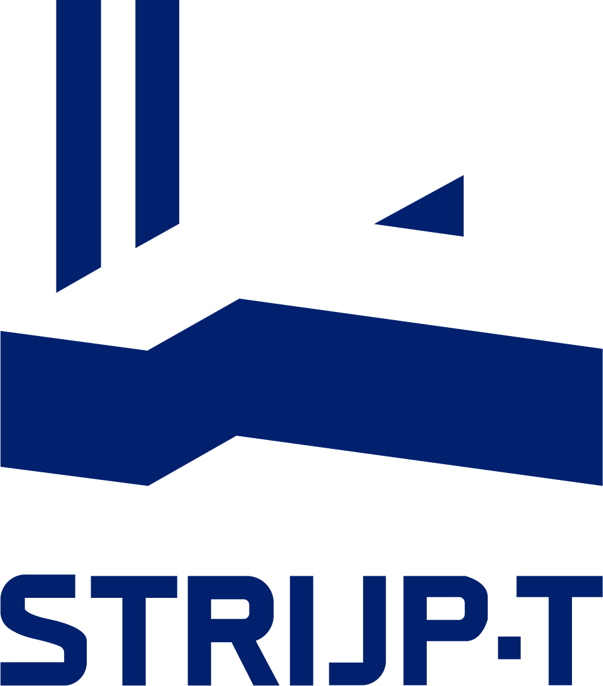
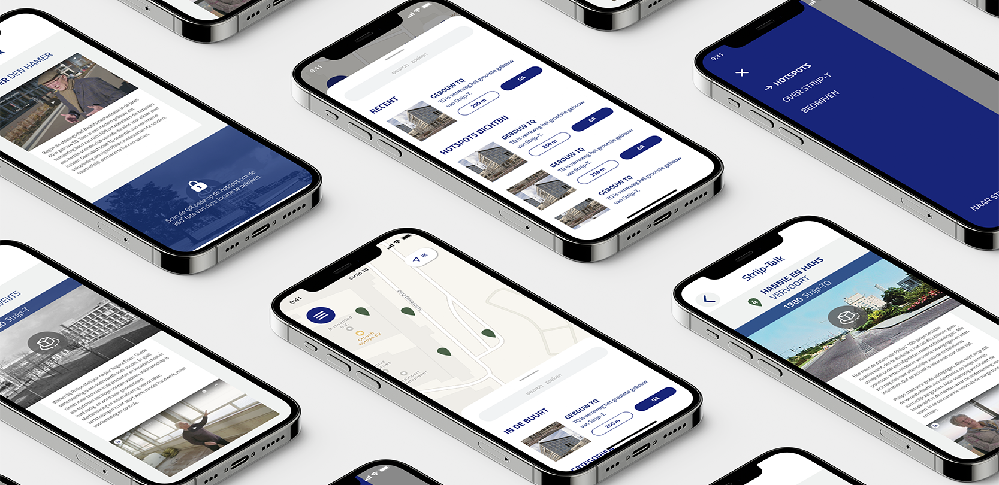

Strijp-T is een innovatie district in Eindhoven. De focus ligt op duurzaam ondernemen in een inspirerende en dynamische omgeving. Veel hightech bedrijven zijn gevestigd op Strijp-T. Ook Fontys ICT is hier te vinden. Onze taak in dit project was om de identiteit van Strijp-T en al zijn bewoners te versterken.

Als groep hebben is er een concept bedacht voor een app met
verschillende hotspots in het Strijp-T-gebied, die bezoekers kunnen
vinden. Wanneer bezoekers bij een hotspot aankomen, kunnen ze een
QR-code scannen, waarna de Strijp-T-app wordt geopend. Bij deze
hotspots krijgen bezoekers video's te zien van voormalige
medewerkers van Philips en een overzicht van bedrijven in de buurt
van die specifieke hotspot.
Mijn aandeel in het ontwerpen en realiseren van deze app zijn de
pagina's die worden getoond wanneer de gebruiker zich bij een
hotspot bevindt. Op de eerste pagina staat de video, informatie over
de hotspot en een aantal aanbevolen bedrijven die in de buurt van
die hotspot te vinden zijn. De tweede pagina toont een volledige
lijst van bedrijven in Strijp-T en hun locatie.
Voor de ontwikkeling van de app hebben we gekozen voor een
Progressive Web App, omdat op deze manier alle platforms (zoals iOS
en Android) bereikbaar zijn. Het coderen gebeurt met het
vue.js-framework, waarin we sjablonen maken voor elke pagina.
PREV